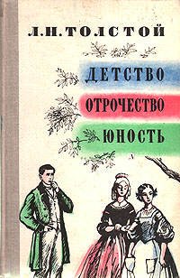
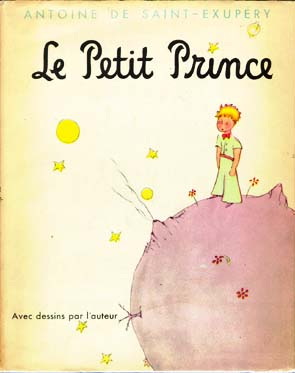
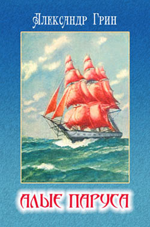

О нашем магазине
Адрес:
Наш офис находится по адресу: улица Профессора Попова, 5.
Всезнайка
Заказывайте книги одним кликом!
Робинзон Крузо
Год издания: 1719

Автор(ы): Даниель Дефо
Жанр(ы): Детская литература, классика, приключения
Популярный роман английского писателя Даниэля Дефо об удивительных приключениях Робинзона Крузо, прожившего двадцать восемь лет в полном одиночестве на необитаемом острове.
Детство. Отрочество. Юность
Год издания: 1852-1857
Автор(ы): Лев Николаевич Толстой Жанр(ы): Детсткая литература, автобиография
Псевдо-автобиографическая трилогия Льва Толстого.
Маленький принц
Год издания: 1942
Автор(ы): Антуан де Сент-Экзюпери Жанр(ы): Детская литература, классика, сказка
Аллегорическая повесть-сказка, наиболее известное произведение Антуана де Сент-Экзюпери. .
Алые паруса
Год издания: 1916—1922
Автор(ы): Александр Грин Жанр(ы): Детсткая литература, сказка, неоромантизм
Феерия Александра Грина о непоколебимой вере и всепобеждающей, возвышенной мечте, о том, что каждый может сделать для близкого чудо